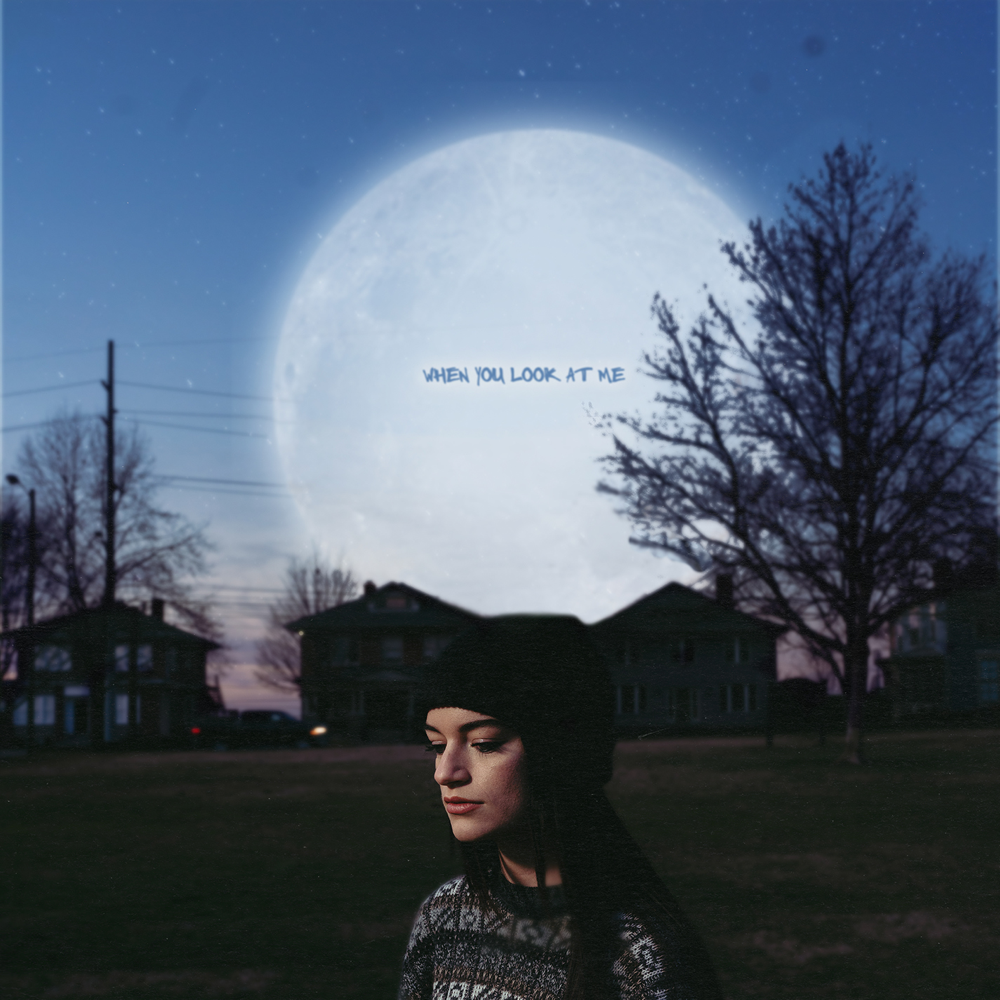

When You Look At Me by Sara Kays
Sara Kay's song, When You Look At Me, depicts a unique type of
heartbreak. One that has yet to happen but however is currently
happening too. In this song, Sara Kay feels lost as she desperetly
pledes for the love that he once had with her current boyfriend.
Although not broken up, it might as well had been one as Sara doesn't
feel like the love they once had was still there.
Lyrics
I don't feel like you like me lately
I don't feel like I'm pretty
Do I have the same glow about me
As that night in the city?
When you told me I remind you of the moon
I'm still holding onto that and onto you
When you look at me, do you still think
That I shine brighter than anyone?
Or have you seen somebody else lately
Who reminds you of the sun?
I've been hoping since late September
That you'd act how you used to
You keep saying you don't remember
Hate that I have to tell you
How you told me I remind you of the moon
And you'd hold me and that now you never do
When you look at me, do you still think
That I shine brighter than anyone?
Or have you seen somebody else lately
Who reminds you of the sun?
When you look at me (When you look at me)
When you look at me (When you look at me)
When you look at me
When you look at me (When you look at me)
I know at your front door
That I won't be spun around anymore
And I know what I'm in for
When I hope you love me like you did before
And I know at your front door
That I won't be spun around anymore
And I know what I'm in for
When I hope you love me like you did before
When you look at me, do you still think
That I shine brighter than anyone?
Or have you seen somebody else lately
Who reminds you of the sun?
When you look at me (When you look at me)
When you look at me (When you look at me)
When you look at me
When you look at me (When you look at me)
What Sara Kay has to say:
"'When You Look At Me' is about feeling like the person you're with
doesn't look at you the same anymore, or act like they used to around
you. I wrote this song about a month ago when I was feeling that way in
my relationship, and decided to record it shortly after that while it
was still real to me." - Sara Kays via Broadway World
Sources
Name
Link
Notes
Old Time Music
Description
Disects the song well and provides song's information
Genius
Lyrics
Provides song's lyrics and Sara's thoughts on the song
YouTube
Music Video
Song's official music video